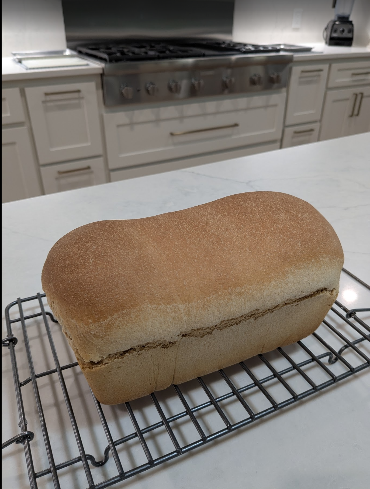

Ingredients
Directions
Baking Timeline
| Step | Direction | Time (min) | Notes |
|---|---|---|---|
| 1 | Proof yeast | 10 | In stand mixer bowl |
| 2 | Knead | 8 | Add flour, salt, and butter |
| 3 | Proof #1 | 60 | Covered oiled container |
| 4 | Shape | 10 | De-gas, flatten, and roll |
| 5 | Proof #2 | 45 | Covered buttered loaf pans, preheat oven @20 min |
| 6 | Bake | 35 | |
| 7 | Rest and serve | 10 |